Plugin Version: 1.2.3 |
Release Notes
Plugin Version: 1.2.3 |
Release Notes
Overview
Warning: The Enhanced Home Experience (EHX) plugin is not compatible with ProcessMaker 3.6.0 and later. If you have the EHX plugin in your ProcessMaker environment, please do not upgrade to ProcessMaker 3.6.0 or later until further notice.
Enhanced Home Experience (EHX) is a plugin that provides a new appearance and functionality to the ProcessMaker experience:
New Interface: Sort and categorize your cases more efficiently.
New Cases: Add a new interface organized by Categories and start cases.
Inbox View Changes: Access and view your Inbox messages more easily.
New Cases Metrics: View Cases Metrics that provide new metrics to your ProcessMaker data.
Embedded Inbox and Processes: View the new Inbox or Cases features without entering ProcessMaker by using an embedded URL.
Requirements
The Enhanced Home Experience plugin requires:
-
ProcessMaker versions 3.4.x or 3.5.x. The EHX plugin is not compatible with ProcessMaker 3.6.x.
Restrictions
Please take into consideration the following restrictions:
- The plugin interface is minimally designed to be used on a 7.9-inch wide display device such as an Apple iPad.
- The plugin Set Up settings are not web responsive.
Set Up
This section describes the following:
How to Install and Enable the Enhanced Home Experience Plugin into ProcessMaker.
Install and Enable the Enhanced Home Experience Plugin
Follow these steps to complete the enterprise plugin installation.
1. Log in with a user, such as "admin", who has the PM_SETUP_ADVANCE permission in their role.
2. Go to ADMIN > Plugins > Enterprise Manager.
3. In the Enterprise Plugins tab, install the Enhanced Home Experience plugin doing one of the following:
- Click
 Install from File and upload the plugin file.
Install from File and upload the plugin file. - Click the Enhanced Home Experience plugin's Install now or Upgrade now button in the list of available plugins.

For more information about plugin options, see Enterprise Manager Tool.
4. After installing the plugin, make sure that the Enhanced Home Experience plugin is enabled  . If the plugin is not enabled, click the Enable button, as shown in the graphic below.
. If the plugin is not enabled, click the Enable button, as shown in the graphic below.
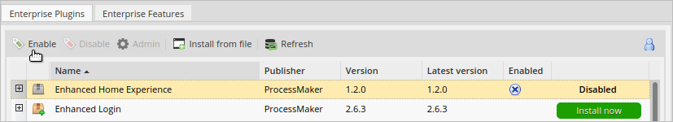
Enhanced Home Experience Configuration
After the plugin is installed and enabled, to configure the Enhanced Home Experience, follow these steps:
-
Go to Admin > Plugins and click the EHX Settings option. The Welcome to the Enhanced Home Experience Plugin screen displays.
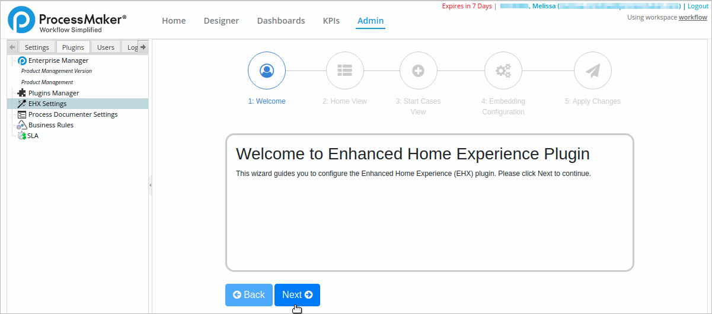
-
Click Next to start the wizard. The Enhanced Home View Access screen displays.

-
Use the Enhanced Home View Access screen to configure which role(s) can view the new Home view to display cases. In doing so, optionally configure which role(s) can view the Cases Metrics for your new Home view. The Enable Metrics setting displays metrics for the status of processes and cases in a different way and with additional information than how ProcessMaker provides by default. The Enable Metrics setting cannot be enabled unless the new Home view is.
Do one of the following:
Do not use the new Home view: Click Next. Skip to Step 4.
-
Configure which role(s) have access to the new Home view: Follow these steps to configure the role(s) that have access to the new Home view:
-
Toggle the Enhanced Home View option so that it reads Yes. When the Enhanced Home View option is enabled, optionally click the Preview button to preview the new Home view when the configuration is completed.
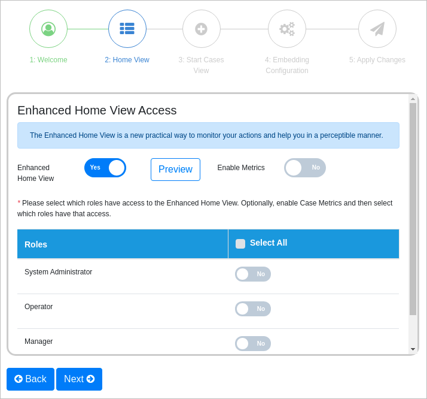
Select which ProcessMaker role(s) have access to this view by toggling each role so the toggle key reads Yes. By default, all toggle keys read No, meaning no role has access to this new Home view. Click the Select All checkbox to grant all ProcessMaker roles access to the new view.
-
Optionally, click the Enable Metrics to enable the cases metrics for this view. When the Enable Metrics option is enabled, optionally click the Preview button to preview case metrics when the configuration is completed. Select which ProcessMaker role(s) have access to this view by toggling each role so the toggle key reads Yes. By default, all toggle keys read No, meaning no role has access to case metrics for this new case metrics. Click the Select All checkbox to grant all ProcessMaker roles access to case metrics for the new view.
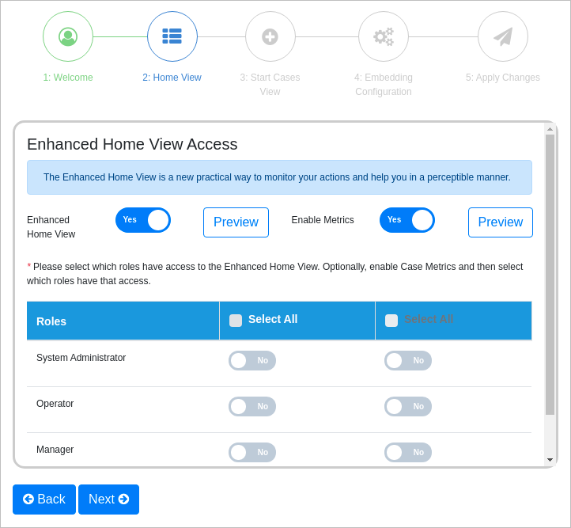
Click Next to continue.
-
-
After clicking Next from the Enhanced Home View Access screen, the Enhanced Start Cases View Access screen displays. Use this screen to configure which role(s) can view the new interface to start cases. In doing so, optionally configure which role(s) can view the enhanced Start Cases view. The Customize Category Appearance allows you to change the icon and color of the Categories and processes.
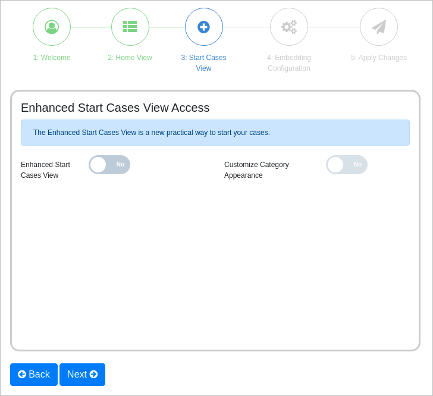
Do one of the following:
Do not use the new Start Cases view: Click Next. Skip to Step 5.
-
Configure which role(s) have access to the new Start Cases view: Follow these steps to configure the role(s) that have access to the new Start Cases view:
-
Toggle the Enhanced Start Cases View option so that it reads Yes. When the Enhanced Start Cases View option is enabled, optionally click the Preview button to preview the new Home view when the configuration is completed.

Select which ProcessMaker role(s) have access to this view by toggling each role so the toggle key reads Yes. By default, all toggle keys read No, meaning no role has access to this new Start Cases view. Click the Select All checkbox to grant all ProcessMaker roles access to the new view.
-
Optionally, click the Customize Category Appearance to customize how categories display in this view. When the Customize Category Appearance option is enabled, optionally click the Preview button to preview how categories would display when the configuration is completed. Select which ProcessMaker role(s) have access to customize how categories display by toggling each role so the toggle key reads Yes. By default, all toggle keys read No, meaning no role has access to customize how categories display for the new Start Cases view. Click the Select All checkbox to grant all ProcessMaker roles access to customize how categories display for the new view.

Click Next to continue.
-
-
Use the Embedding Configuration Access screen to configure which role(s) can view the option to embed the Home view or the Processes interfaces.
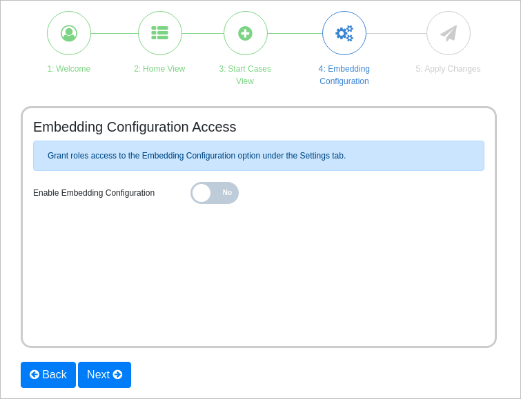
Do one of the following:
Do not use Embedding Configuration: Click Next. Skip to Step 6.
-
Configure which role(s) can use Embedding Configuration: Follow these steps to configure the role(s) that can use the embedded option:
-
Toggle the Enable Embedding Configuration option so that it reads Yes. When the Enable Embedding Configuration option is enabled, optionally click the Preview button to preview the Embedding Configuration view when the configuration is completed.
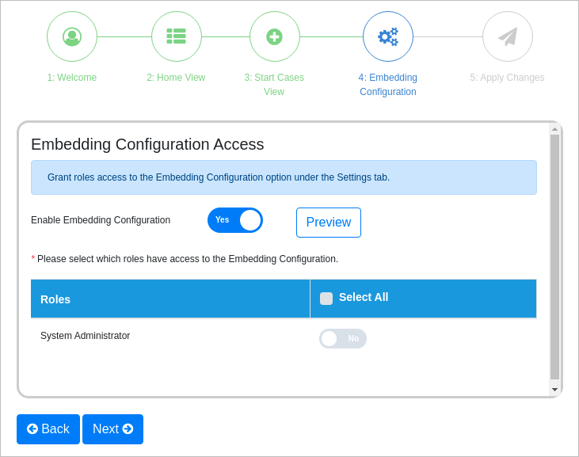
Select which ProcessMaker role(s) can use the embedding configuration feature by toggling each role so the toggle key reads Yes. By default, all toggle keys read No, meaning no role can use the embedding configuration feature. Click the Select All checkbox to grant all ProcessMaker roles access to this feature.
Click Next to continue.
-
After clicking Next from the Embedding Configuration screen, the Apply Changes screen displays. Click Apply to apply your previous changes in the configuration wizard. The Enhanced Home Experience plugin applies your ProcessMaker role settings.
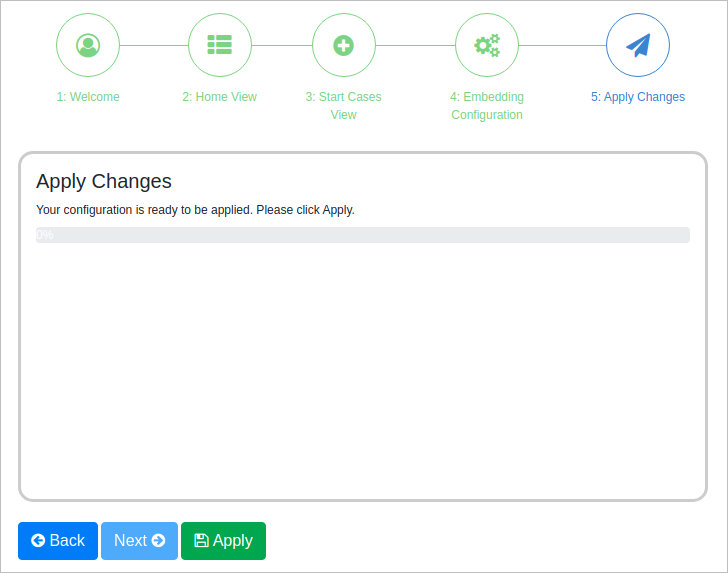
After the wizard finishes applying the changes, click the Home tab in the top menu to view the new interface.
New Interface
After the configuration is completed, the new ProcessMaker interface displays.

The following aspects of ProcessMaker change for role members granted access to configured plugin features:
For the role members that were granted access to the new Home, Start Cases and/or Case Metrics views, a new submenu displays. The new submenu applies a change in style to all the options set up in the previous submenu and integrates them into the new menu skin. This includes the options added by other ProcessMaker plugins and features.
This new style maintains the same functionality as ProcessMaker’s default view.
Note the change in appearance from the default ProcessMaker view.
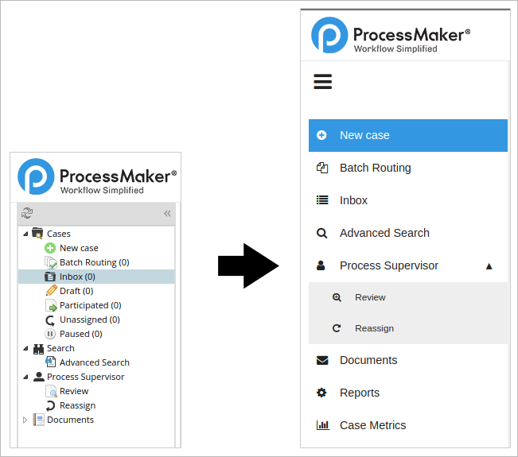
The options Draft, Participated, Unassigned and Paused do not display on the submenu, but they display in the Inbox option as filters.
The new side menu displays the icon that allows you to collapse and expand the submenu.
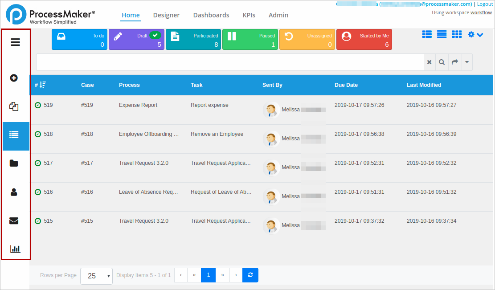
As of Enhanced Home Experience 1.2.0, each collapsed submenu displays their options as follows:
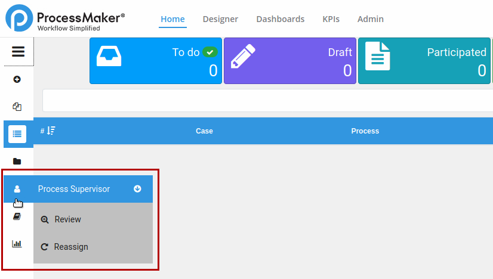
New Case
For the role members that were granted access to the new Start Cases view, the New Case interface displays all the Categories and processes available by default. Categories function as filters: selecting a Category only displays processes assigned to that Category.
The New Case interface displays as follows:
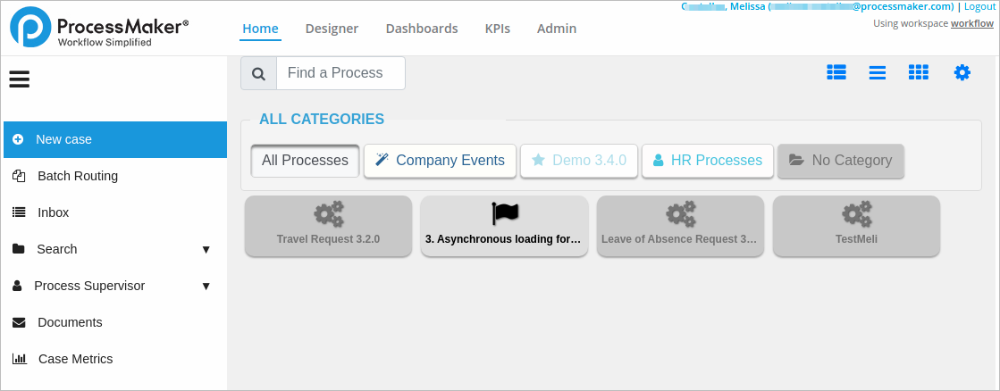
When you select a Category, all the processes related to that category displays below the ALL CATEGORIES container:
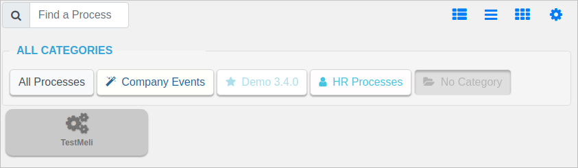
Use the View Display options  to display the Categories as follows:
to display the Categories as follows:
-
All in One (Table): This is the default option. This displays all the Categories and all the processes created in ProcessMaker.
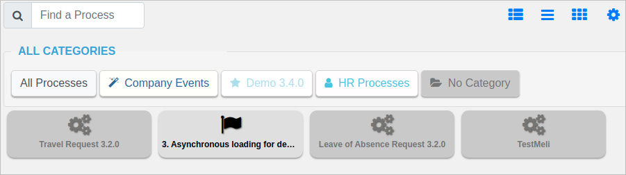
-
Accordion (Case List): This option displays all Processes in a list form which opens the related processes within a selected Category.
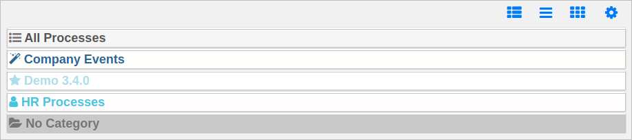
-
Big Icons (Grid)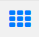: This option displays all processes in a selected Category within a grid using big icons.
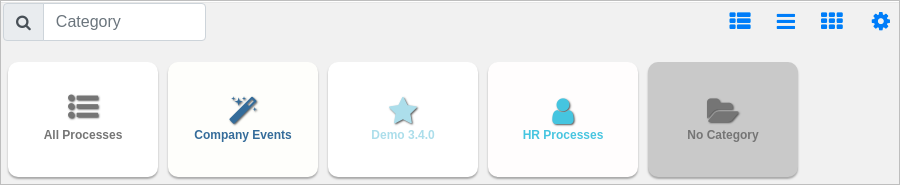
When using the Big Icons option, it is possible to go back to the Categories grid by clicking on the
 button.
button.
Starting a Case for a Process
To start a case for a specific process, follow these steps:
Select the Category for the process for which you want to start a case. Only the processes assigned to that Category display.
Mouse-hover over the process. Tasks available to start a case display.
-
Select a task to start a case.

For more information about starting new cases visit the page Opening a Case.
Configuring the Categories and Processes
You can change the icons and colors of the categories and processes by clicking the Configuration icon. This opens an interface where you can do all the changes.
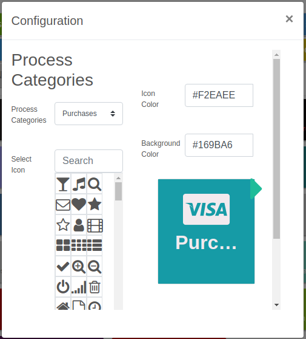
In this interface you can do the following:
Select the category you want to modify using the Process Categories option.
Use the Select Icon option to change the icon of the selected category.
Use the Icon Color option to select the color for the icon by selecting a swatch from a color palette.
Use the Background Color to select the background color by selecting a swatch from a color palette.
After you complete the configurations, click on the green arrow to display the Edit Process interface:

You can save your changes by clicking Save, or you can go back to editing by clicking the green arrow. Check the Would you like to edit the processes one by one for the selected category? option to be able to change the icons and color of the process in the selected category and save the changes one by one.
Inbox
For the role members that were granted access to the Inbox changes, it displays in the new submenu. The Inbox changes display as follows:
You can sort the information in the table using the filters at the top of the screen with the following options:
To do

Draft
Participated
Paused

Unassigned

Started by Me

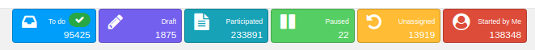
The green check shows which filter is in use at the moment. In the example above the table is sorted by To do.
The information available on the dashboard displays the following columns:
Sorting by number (ascending or descending): This is the number of the case.
Case: This column shows the label of the case (by default the number of the case).
Process: This is the name of the process from which the case belongs.
Task: This is the name of the task where the case is at the moment in the flow of the process.
Sent By: This is the previous user in the case who sent the case.
Due Date: This is the due date for the case to be completed.
Last Modified: This is the date when the case was modified for the last time.
Priority: This is the priority assigned to the case.
The information can be viewed by clicking any of the following icons located on the top right of the screen .
-
The default option (Table) displays the cases organized in columns as shown below:
-
The second option (Cases List) displays the cases organized in a list as shown below:
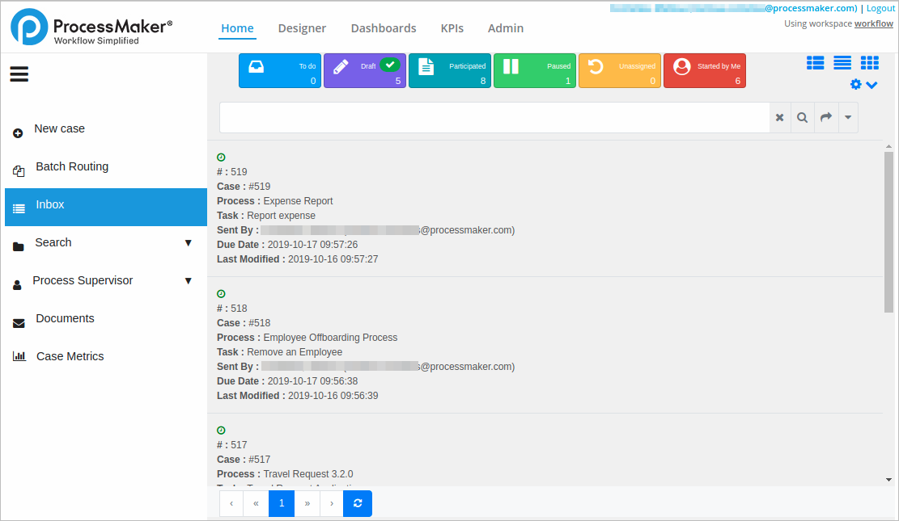
-
The third option (Grid) displays the cases as shown below:
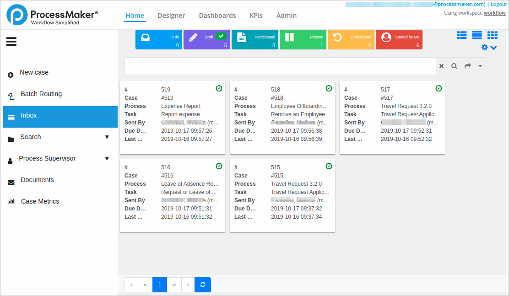
You can filter the information you want by clicking the 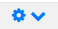 option. That displays a list with all the information available. Check or uncheck the information you want to show.
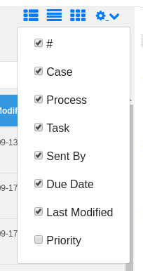
When you move the cursor over any of the cases the following options display:
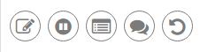
-
 Open Case: This option allows you to open the case and continue if it is available. When you click Open Case, the case displays on the right side of the screen. The new screen displays the following options:
Open Case: This option allows you to open the case and continue if it is available. When you click Open Case, the case displays on the right side of the screen. The new screen displays the following options:Hide Inbox

Full Screen 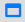
Close
-
Pause Case: This option allows you to pause the case if possible. When you click Pause Case, a pop-up interface displays the following:
A calendar with the current date.
A time picker, to set up the present time.
A field to enter an explanation of why the case is to be paused.
A checkbox to notify the users (optional).
Click Ok to save the changes and pause the case or click Cancel to exit.
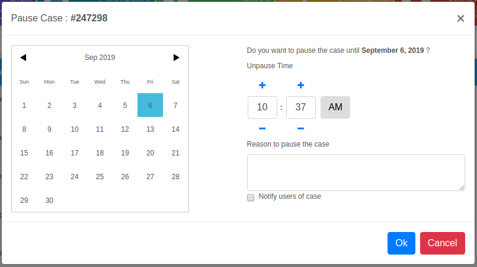
-
Summary: When you click Summary, a new screen displays with all the information regarding the case. This will happen if you have permission to access this information.
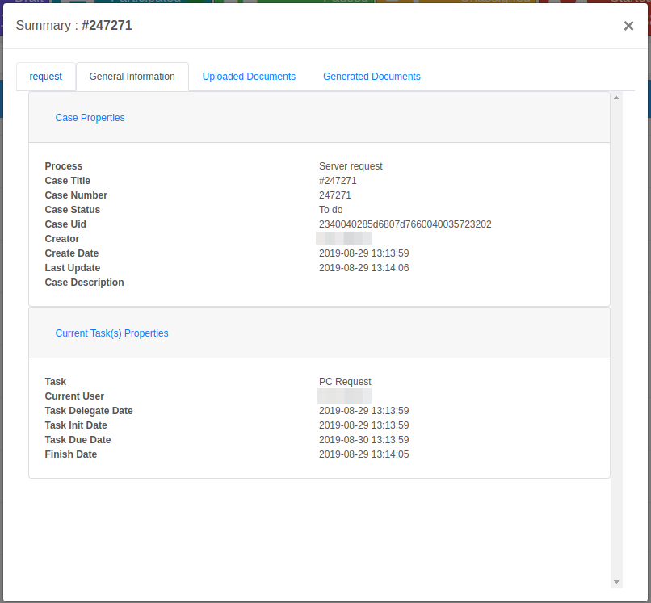
-
 Case Notes: This option allows you to enter comments related to the case. In a separate pop up interface displays the following:
Case Notes: This option allows you to enter comments related to the case. In a separate pop up interface displays the following:A blank field to enter the notes or comments regarding the case.
A checkbox to tick if an email is to be sent to the Case Participants it ticked.
The user who is entering the notes or comments.
The time and date when these comments are noted.
Click to save the information entered.

-
Reassign: This option allows you to reassign a case to a different user. This pop-up screen displays the following:
Full name of the user who the case is being reassigned to.
A number of pages of users to reassign the case.
A blank field where to enter the reason to reassign the case.
A checkbox to be ticked to notify the users involved in the case (optional).
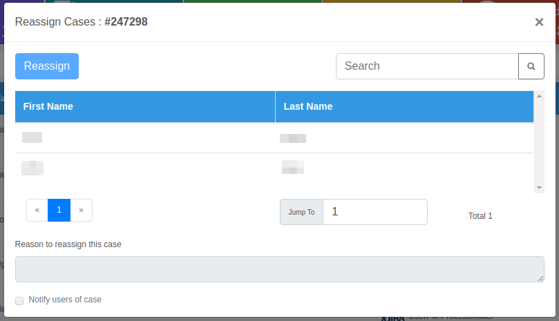
Case Metrics
For the role members that were granted access to the Case Metrics option, it displays in the new submenu. The Case Metrics option displays general information about all cases and it displays as a different dashboard than the ProcessMaker default.
Case Metrics display the following information:
-
The number of cases organized by the following categories:
All: This option displays all the cases created in ProcessMaker. This displays a graphic and a filter that takes the user back to the Inbox.
On Time: This option displays all the cases that are running on time. This displays a graphic.
At-Risk: This option displays the cases that are at risk of not being on time. This displays a graphic.
Overdue: This option displays the cases that are currently overdue. This displays a graphic and a filter that takes the user back to the Inbox.
-
Cases are organized in the following categories:
Inbox
Draft
Participated
Paused
Unassigned
Cases per process.
The number of cases per process.
A chart displaying the number of cases with the option of selecting a start and finish date.
A chart displaying the number of processes per category.
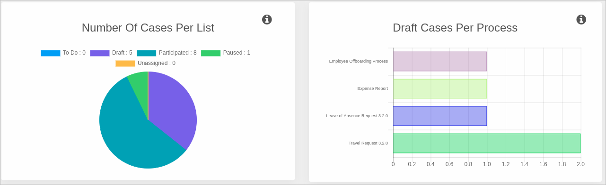


Embedding Configuration
Use Embedding Configuration to do either of the following:
Access the Inbox feature directly via a generated URL.
Start cases for a process via a generated URL.
Access the Embedding Configuration feature from Admin > Settings > Embedding Configuration.
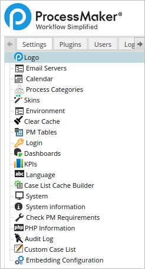
After clicking the Embedding Configuration option, the ProcessMaker Embedding Configuration screen displays.
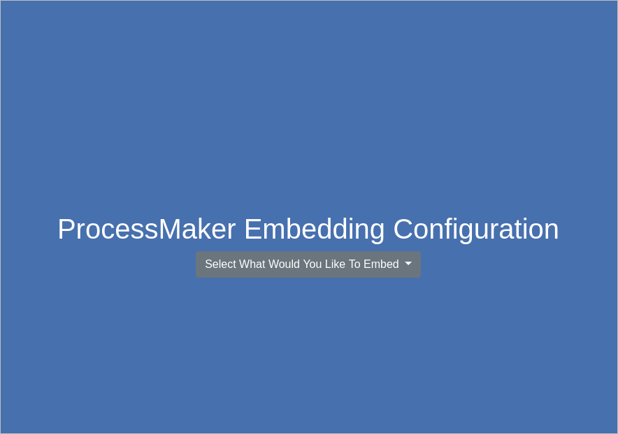
Select one of the following options from the Select What Would You Like To Embed drop-down menu:
Generate a URL to Embed Processes
To generate a URL to embed processes from which to start cases after you have accessed the Embedding Configuration feature, follow these steps:
-
Select the Start Cases View option from the Select What Would You Like To Embed drop-down menu. The Embedding Configuration feature previews how the embedded processes would display when the URL is accessed.
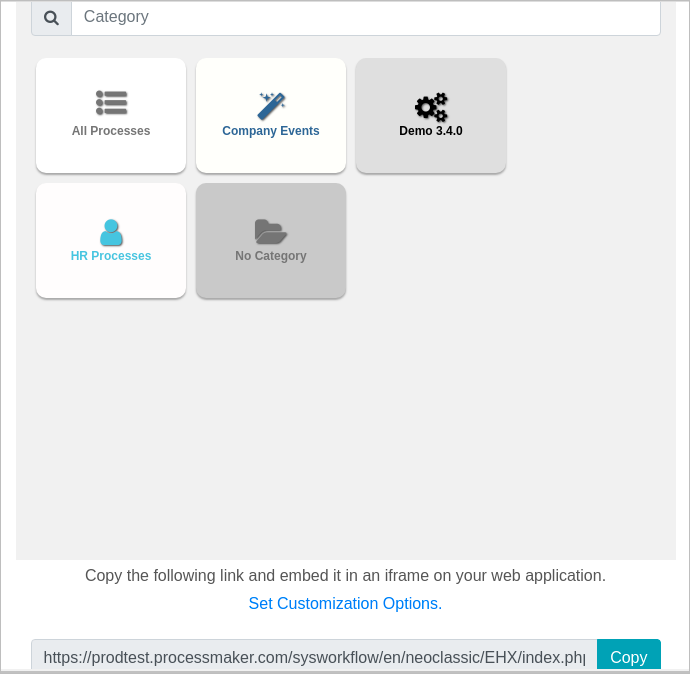
-
Do one of the following:
Generate the URL from which users access the embedded processes: Click the Copy button below the preview to copy the generated URL. Share this URL with users who will access the embedded processes to start cases.
-
Customize how the embedded processes display: Click the Set Customization Options link or scroll down the screen. Customize the appearance of embedded processes with the following options:
Category: Click Go from the Category panel to customize categories. See Edit Category.
Process: Click Go from the Start Cases View panel to customize how processes display. See Edit Process.
Layout: Click Go from the Layout panel to customize how they layout displays. See Edit Layout.
Click Save to save the configuration. The following message displays: Data saved successfully.
Click Close to exit.
Edit Category
The Edit Category screen displays. Use this screen to customize how a category displays when the embedded processes are accessed from the generated URL.
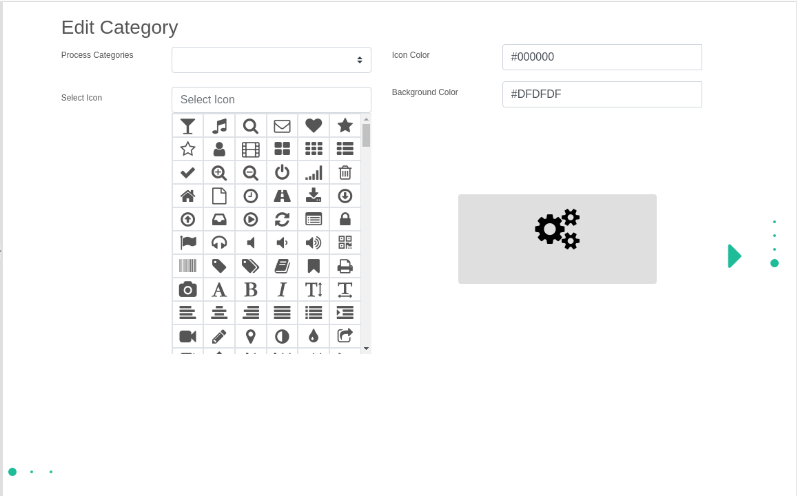
Follow these guidelines:
From the Process Categories option, select which category to customize. A preview displays how the category displays from the generated URL.
Optionally, from the Select Icon option, select which icon to represent the selected category.
Optionally, from the Icon Color option, click to display a color palette from which to choose the color for the icon.
Optionally, from the Background Color option, click to display a color palette from which to choose the color for the background of the box.
Click the right-pointing green arrow to display the next customization screen. The Edit Process screen displays. See Edit Process.
Edit Process
The Edit Process screen displays. Use this screen to customize how one or more processes display for a selected category when the embedded processes are accessed from the generated URL.

Follow these guidelines:
-
Do one of the following depending on whether you selected a category from the Edit Category screen:
Category is selected: Skip to Step 2.
Category is not selected: From the All Categories option, select which category to customize. A preview displays how the category displays from the generated URL.
-
Do one of the following depending on whether you want to use the same settings for all processes in the selected category or edit processes in the selected category individually:
Use the same settings: Click on the right-pointing green arrow to display the next customization screen. The Edit Layout screen displays. See Edit Layout.
-
Customize each process individually: Follow these guidelines:
-
Select the checkbox Customize processes individual. New options display to select the process in which to customize its appearance.
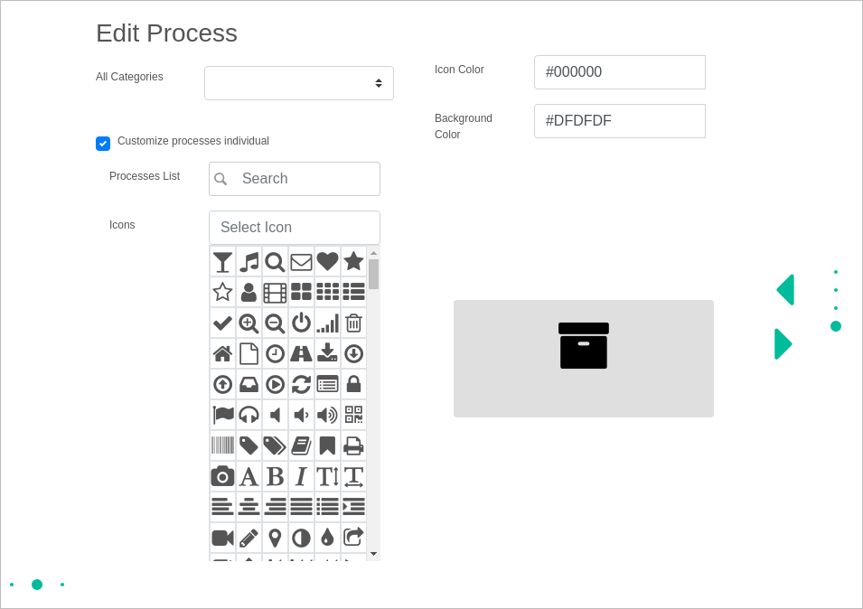
From the Processes List option, search for the process in which to customize its appearance. Only processes that are assigned to the selected category are available. Select a process to customize its appearance. If not processes can be found using your entered text, the following message displays: Failed to fetch.
Optionally, from the Select Icon option, select which icon to represent the selected process.
Optionally, from the Icon Color option, click to display a color palette from which to choose the color for the icon.
Optionally, from the Background Color option, click to display a color palette from which to choose the color for the background of the box.
Click the green arrow to display the next customization screen. The Edit Layout screen displays. See Edit Layout.
If necessary, click the left-pointing green arrow to display the previous customization screen. The Edit Category screen displays. See Edit Category.
-
Edit Layout
The Edit Layout screen displays. Use this screen to customize the layout for categories when the embedded processes are accessed from the generated URL.
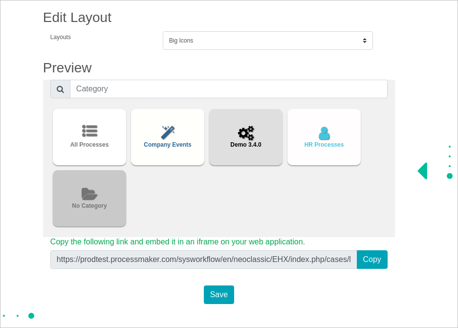
Follow these guidelines:
-
From the Layouts option, select one of the following layouts:
-
Big Icons: Select Big Icons to display categories as big icons in a grid.
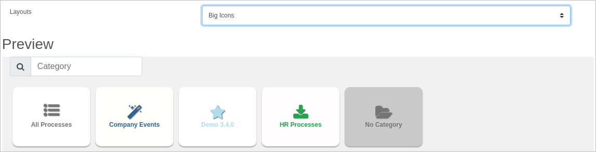
-
All in One: Select All in One to display categories in one panel.

-
Accordion: Select Accordion to display categories in a list that expands to show its associated processes.
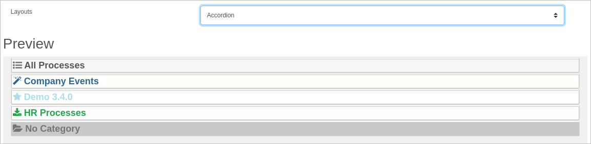
-
-
If necessary, click the left-pointing green arrow to display the previous customization screen. The Edit Process screen displays. See Edit Process.
Embedding Inbox
To generate a URL to embed the Inbox view after you have accessed the Embedding Configuration feature, follow these steps:
Select the Home View option from the Select What Would You Like To Embed drop-down menu.
-
Select any of the following options to display its case list in the Home view:
To do
Draft
Participated
Paused
Unassigned
Started By Me
-
Click the List View tab, then select any of the following options to indicate how to display data in the Home view:
Table: Display the cases in columns.
Cases Lists: Display the cases in a list.
Grid: Display the cases in a grid.
-
Click the Columns tab, and then select any of the following options to indicate which columns to display in a case list from the Home view:
#: Display the case number.
Case: Display the case label (by default the number of the case).
Process: Display the name of the process from which the case belongs.
Task: Display the name of the task where the case is at the moment in the flow of the process.
Sent By: Display the user previous user in the case who sent the case.
Due Date: Display the due date for the case to be completed.
Last Modified: Display the date when the case was modified for the last time.
Priority: Display the priority of the case.
Click Save and Preview.
Click the Copy button above the Home view settings to copy the generated URL. Share this URL with users who will access the embedded Home view.